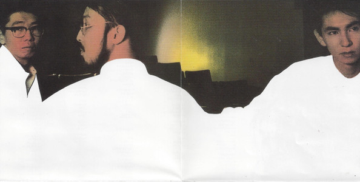
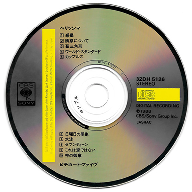
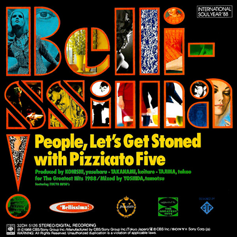
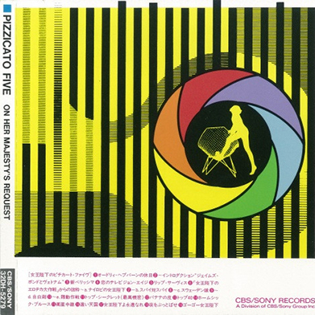
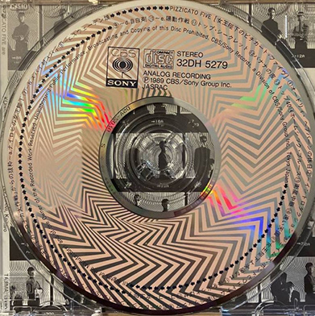
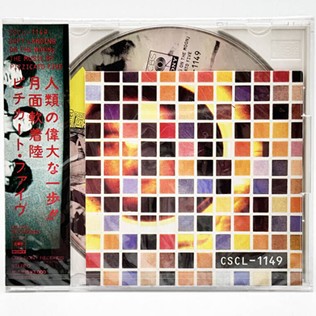
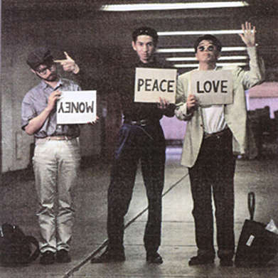
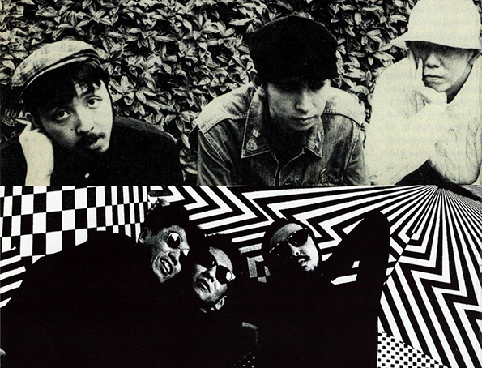

pizzicato five was a japanese pop band active from 1985 to 2001. the lineup of the band changed a lot throughout the years, and their discography can be divided into different periods where these changes, and especially main vocalist changes, caused the band to explore entirely new styles, genres and visuals. pizzicato five is mostly known for its last version, a duo that was responsible for popularizing shibuya-kei as a genre with their blend of pop, electronic and 60s music from 1991 to 2001. however, this page is dedicated to the lineup previous to that, a much more soul & lounge influenced phase, in which the group consisted of konishi yasuharu (bass, keyboard), takanami keitaro (guitar, keyboard) and tajima takao (vocals, guitar). though it didn't last too long, between 1988 and 1990 they released three amazing albums that i love a lot: bellissima, on her majesty's request and soft landing on the moon.
in this shrine i want to talk about why i love these albums so much AND i want to share a bit of the story of the band. i had fun researching it and think it's really interesting...
 listen on youtube
listen on youtubethe first time i found some songs from bellissima years ago, i knew i found something special. this album doesn't take as many risks as the other two, but i think it demostrates how pizzicato five doesn't need to be extravagant to sound amazing. it's not especially groundbreaking style or genre wise, but the composition, the melodies and the beautiful vocals are all so perfect that it still manages to blow my mind. it's just pure talent! i think it's the album that proves that all three of them are amazing musicians. it's especially obvious with tajima, the main singer. his vocals really shine in this album, they sound so powerful yet so smooth and effortless... he became one of my favorite vocalists and i really enjoy his solo work as well. such a timeless and beautiful album.
"i wanted to create something that was light and easy to listen to, but the lyrics and the feeling you get after listening to it are really heavy and dark"- konishi


 early years
early years
it all started long long ago... founding members konishi and takanami (college students at the time) met in 1979 at a local music society meeting. though the idea to form a band was present since then, it wasn't until 1984 that they found a vocalist for the project. so, with singer mamiko sasaki, keyboardist ryo kamomiya and drummer shigeo miyata, they formed pizzicato five. the "five" in the name almost instantly lost meaning when miyata left the band shortly after joining, but the four remaining kept the name anyway. only one album, couples, was released by this quartet in 1987. apparently, it wasn't very commercially successful, and their record label pressured them to find a new main vocalist. mamiko sasaki and ryo kamomiya left the band this year, leaving only the two original members in search of a new vocalist once again. not too long after, konishi saw takao tajima perform at a festival with his band, original love, and was so amazed that he decided to ask him to join pizzicato five as the new main vocalist. tajima agreed, under the condition that he could still work on his own band at the same time, and that's how the best my favorite pizzicato five era started!
i think this might be my favorite out of the three. i really love how it keeps the essence of bellissima while also introducing a lot of the elements that would be the foundation of their sound later on. it's still sweet and romantic lounge music, but in a more bold, experimental and playful way. the beautiful strings and orchestral instruments that shaped their previous album are mixed with samples, vocal chops and new electronic sounds in a really innovative way, especially for its time. who else was doing vocal chops in 1989??!!! NO ONE!! (probably). i also find it funny and endearing that it is a very conceptual album in a very unserious way, since it was made for a spy movie that doesn't exist yet it is FULLY commited to it. it really makes you believe it's a soundtrack of something. they are all just playing characters and having fun with music. god i love this album
"well, in magazines, even a small column can contain something that has nothing to do with the surrounding articles, and i thought, maybe we could capture that kind of fun in a recording" - konishi


pizzicato '90
i think this trilogy is genuinely perfect as it is, but i still kinda wish this pizzicato lineup lasted longer... around 1990, maybe because the project was starting to branch away from the main vocalist's taste a little, or maybe because these three pizzicato five albums also weren't comercially successful (or both u_u) tajima left the band as well, only two years after joining, to concentrate on his own band. this same year he was replaced by maki nomiya, who had been a backup vocalist in some songs before, and she became the face of pizzicato five, completely changing the band's image and sound. this new lineup would end up turning pizzicato five into a truly iconic pop band that toured the world and even helped shape a new music subgenre in japan. i am a bit jealous of the fans of this post 1990 era because there are sooo many photoshoots, music videos, interviews... meanwhile i have only seen these three guys together on video once LOL. but anyway... it wouldn't be long until founding member takanami left the band as well in 1994, leaving pizzicato five as a duo consisting of konishi and nomiya until its end in 2001.
when i listened to this, i knew it would be the last i'd hear from this pizzicato lineup, but i didn't know most of the songs on it would be just different versions of old songs. however... i ended up loving these new versions so much that i wasn't even disappointed by that :P it was such a blessing to hear this clash between the new, modern pizzicato five style and the old. it's almost like a collage, a love letter to their own music. it has vocals from past, present and future pizzicato members, a ton of samples, a wide range of genres, a cover of an old song, old unreleased music, and even interviews (that i can't find translations of). it's so different from the other two that sometimes i forget that they were released just one and two years apart. their growth as musicians in such a short amount of time is truly insane... i think this is a perfect ending to pizzicato 2.0, and a perfect introduction for what the future releases would be.


pizzicato forever!
after doing some research i found out that all three members are still making music, which made me happy to hear! i found out konishi is kind of a legendary producer and writer for other artists (mostly japanese) and that he's credited on a HUGE amount of songs from the 80s until now. and the list is still growing! he also released music kinda recently under the alias pizzicato one. takanami has been writing for other artists as well (sometimes along with konishi) and tajima is still singing and doing shows for original love, though it's less of a band and more of a solo alias now. and i'm his biggest fan LOL. i didn't think i'd enjoy it so much at first but it has slowly grown on me and now i'm lowkey obsessed. i'm on a mission to listen to his whole discography but it's like 25 albums or maybe more so wish me luck...

i had a lot of fun making this shrine and searching every corner of dead internet websites lol! i don't think you can find this many pictures of these three dudes together anywhere else on the internet right now so uhh i'm happy i made this page :P here are some various links to pizzicato five related pages i found. most of these are very old, in japanese, and/or can only be accessed through the internet archive. if by any chance you know of any interviews, videos, or pictures of the band during this time please let me know!
- tiny bit of a live performance + small interview [jp]
- translated pizzicato five lyrics
- complete discography + magazine appearances (mostly maki nomiya stuff)
- konishi interview about the first P5 album [jp]
- huge pizzicato blog / fansite [jp] [archive]
- pizzicato fansite [archive]
- full konishi discography